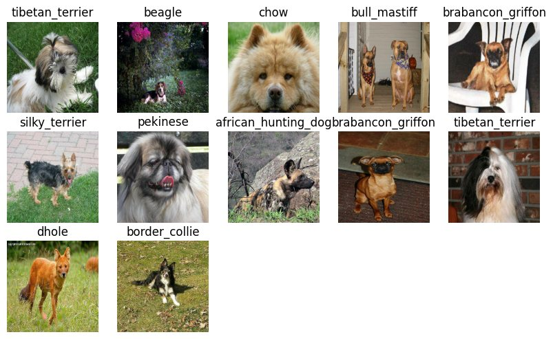

Case study · Computer vision · 2024
Dog Breed Classifier: 120 breeds with transfer learning
Course project, completeOverfits: 97.2% train vs 78.1% validation
An image classifier that names a dog's breed from a photo, out of 120 breeds. It reuses a MobileNetV2 network that was pre-trained on ImageNet, keeps it frozen, and trains only one new softmax layer on top. The saved model gets 78.1% of the validation images right. This page shows how it is built, what I tried, and where it falls short.

01 · Brief
The problem, and what I built
Tell 120 dog breeds apart from a single photo. Many breeds look alike, and there are only about 85 labelled photos per breed (10,222 images for 120 breeds).
I built it during the Zero To Mastery machine learning bootcamp (Oct–Nov 2024), then added my own experiments: augmentation, fine-tuning and an extra dense layer.
A tf.data input pipeline, a transfer-learning model on a frozen MobileNetV2 from TensorFlow Hub, six compared training runs, and a full-data version of the same frozen-base model to predict the Kaggle test set.
Complete as a course project. The notebook is public on GitHub and opens in Colab. The improvements listed under “What's next” are not started.
02 · Model
A frozen MobileNetV2 with one trained layer on top
The base network is MobileNetV2 (width 1.3, 224-pixel input) from TensorFlow Hub. It is loaded with trainable=False, so its 5.4 million weights stay as ImageNet trained them. Only the new 120-way softmax layer learns: 120,240 weights, about 2% of the model. The Hub module I used is the classification version, so the new layer reads the base's 1001 ImageNet class scores, not its internal feature vector.
Diagram is wide: scroll it sideways, or open it full size to zoom. Open full size

Source: create_model and the model.summary() output in DogsCode.ipynb.
03 · Data pipeline
From Kaggle files to batches of tensors
The labels come as a CSV of image ids and breed names, plus a folder of JPEGs. The notebook checks that the two counts match, turns each breed into a one-hot array of 120, and holds back 20% of the images for validation. A tf.data pipeline then reads, decodes and resizes each image as it is needed and groups them into batches of 32. Only the training set is shuffled.
Diagram is wide: scroll it sideways, or open it full size to zoom. Open full size

Source: the data and batching cells of DogsCode.ipynb (labels_csv, boolean_labels, train_test_split, process_image, batches). The 8,177 / 2,045 split follows from test_size=0.2 on 10,222 images and matches the 256 and 64 batches per epoch in the training log.
04 · Train and evaluate
Six runs, one lesson: keep the base frozen
Every run follows the same loop: build the model, train with early stopping, score it on the validation set, and save it to Drive. I changed one thing at a time. Making the base trainable (fine-tuning) cut validation accuracy from about 77% to about 45%, so the last run froze it again. The likely cause is that the whole base was unfrozen from the start at Adam’s default learning rate, which overwrites the pre-trained weights; about 85 images per breed makes that worse. Run 6 is the best, and it is the model the results below describe.
The notebook also trains the same frozen-base model on all 10,222 images (15 epochs, no validation set). The Kaggle test predictions load a full-data model file dated 16 Nov 2024. That is a week before the run-1 file (23 Nov 2024), so the prediction model came before the experiment runs, not after run 6.
Diagram is wide: scroll it sideways, or open it full size to zoom. Open full size

The six runs
| Run | Data | Change | Train acc. | Val acc. |
|---|---|---|---|---|
| 1 | 5,000-image subset | Baseline in notebook | n/a | 77.1% |
| 2 | 5,000-image subset | Rotation and brightness augmentation | n/a | 75.2% |
| 3 | Full, 80/20 | Base trainable (fine-tuning) | n/a | 46.1% |
| 4 | Full, 80/20 | Fine-tuning plus an extra ReLU dense layer | n/a | 45.9% |
| 5 | Full, 80/20 | ReLU layer and augmentation removed, base still trainable | 80.4% | 44.4% |
| 6 | Full, 80/20 | Base frozen again in notebook | 97.2% | 78.1% |
Source: my experiment log (RESULTS.md). Runs 1 and 6 are also in the public notebook's saved output: run 1's model reloads and scores 0.7710, run 6 scores 0.7814. The notebook keeps only the last state of the code, so runs 2–5 are not visible in it. Runs 1 and 2 were scored on a smaller validation split, so compare them with each other, not with runs 3–6.
05 · Results
78.1% on held-out validation photos, and a clear overfitting gap
The charts show run 6 epoch by epoch. Training accuracy climbs to 99.9% while validation accuracy stays near 80%, so the head memorises the training photos. Validation loss is lowest at epoch 5 and rises after that. Around epochs 16–17 training became unstable: training loss jumped about thirtyfold and validation accuracy fell to 74.7%.
Early stopping watched validation accuracy with a patience of 5 epochs. It stopped at epoch 19, five epochs after the 80.8% peak. It was not set to restore the best weights, so the saved model has the epoch-19 weights and scores 78.1%, not 80.8%.
Both charts are plotted from the training log of the final run: the 19 per-epoch lines (loss, accuracy, val_loss, val_accuracy) in the output of run 6 in DogsCode.ipynb. Each dot is one logged epoch, and nothing is smoothed or added. The full-data fit (cell 22) also logged 15 epochs, but it had no validation set, so it is not charted.
06 · Privacy and data
Public dog photos, no personal data
- The data is the public Kaggle “Dog Breed Identification” competition set. Its labels file holds only an image id and a breed name.
- The images are of dogs. The model takes no names, locations or account data, and has nothing to store about people.
- The dataset and the trained
.kerasfiles live in my Google Drive and are not in the repository, which holds only the notebook and a README. - Training ran in Google Colab, so the data was processed in Google's cloud, not on my PC.
07 · Stack
Tools
Python, TensorFlow 2.15 with Keras, TensorFlow Hub for the pre-trained MobileNetV2, tf.data for the input pipeline, NumPy and pandas for labels, scikit-learn's train_test_split, Matplotlib for the image grids, and TensorBoard for training logs. Everything ran in Google Colab with a GPU runtime, reading data from Google Drive.
08 · Limitations
What this model does not show
- Overfitting. 97.2% training against 78.1% validation accuracy. With about 85 photos per breed, the head learns the training set much better than it generalises.
- The best epoch was lost. Early stopping did not restore the best weights, so the saved model is 2.7 points below the run's own peak.
- Top-1 accuracy only. There is no top-5 accuracy, per-breed score or confusion matrix, so I can't yet say which breeds it mixes up.
- Runs are not all comparable. Runs 1 and 2 used a different validation split from runs 3–6, and each setting was trained once.
- Augmentation was only tried on the subset (run 2). It has not been tried with the frozen base on the full data.
- No separate test score. The validation split also drove early stopping and the choice between runs, so 78.1% is a validation score and slightly optimistic. The notebook has no score on a separate held-out test set.
- The full-data model has no score. It was trained on every labelled image, and the notebook does not record a Kaggle leaderboard result for its test-set predictions.
- The head reads class scores. The Hub module is the classification version, so the head learns from 1001 ImageNet class scores instead of the base's feature vector.
09 · What's next
Planned, not done
- Add augmentation to the frozen-base model on the full data.
- Once the head has converged, unfreeze only the top few layers of the base with a low learning rate.
- Try a larger backbone (EfficientNetV2 or ConvNeXt) and report top-5 accuracy.
- Keep one fixed validation split for every run, and add a confusion matrix of the most-confused breeds.